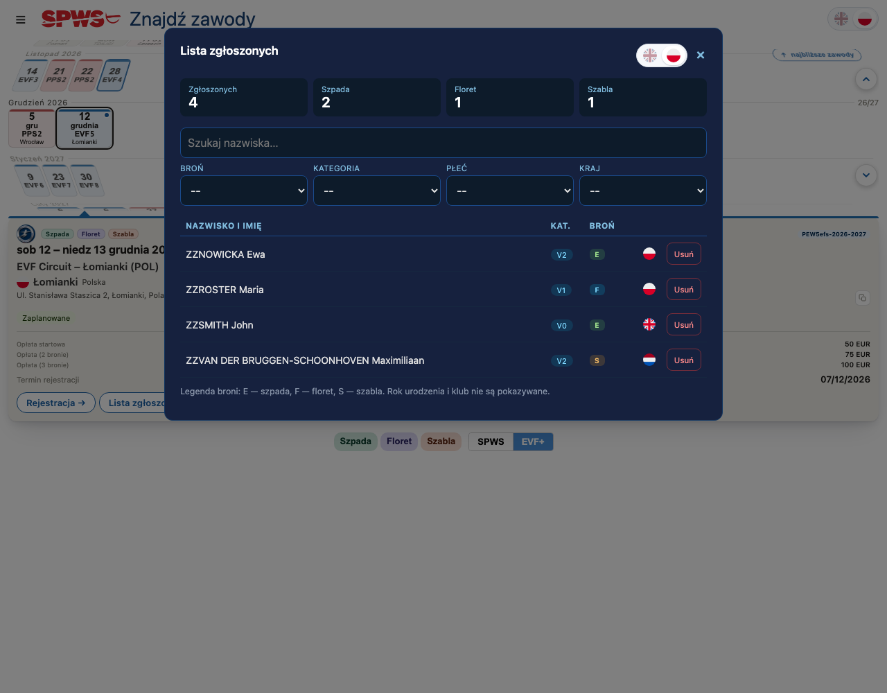
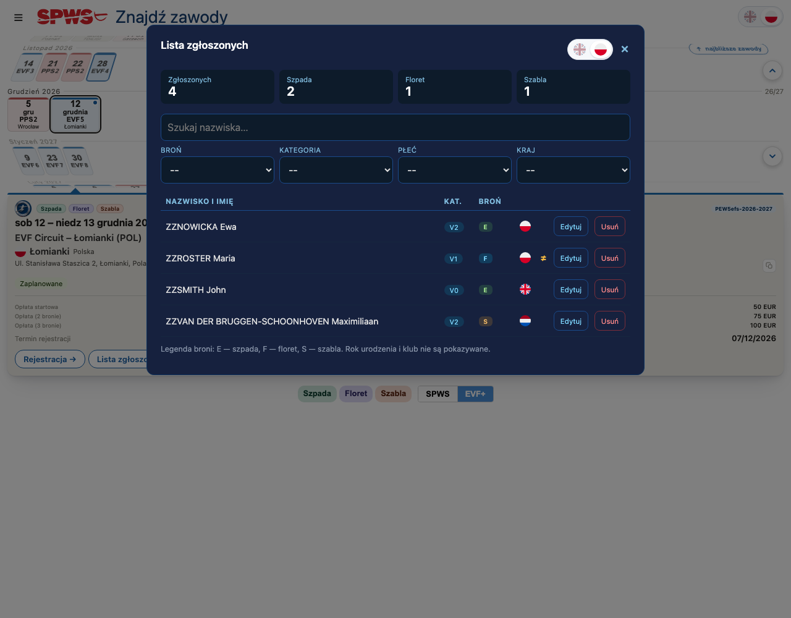
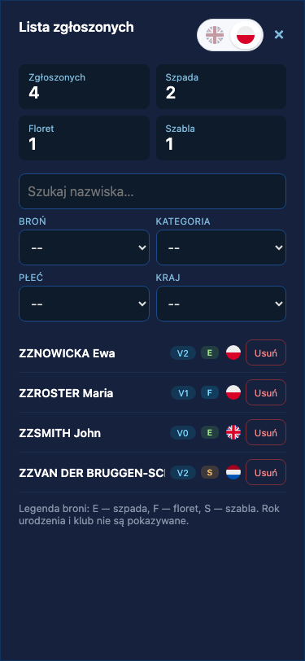
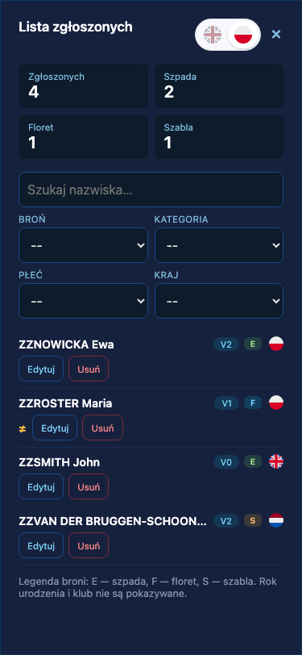
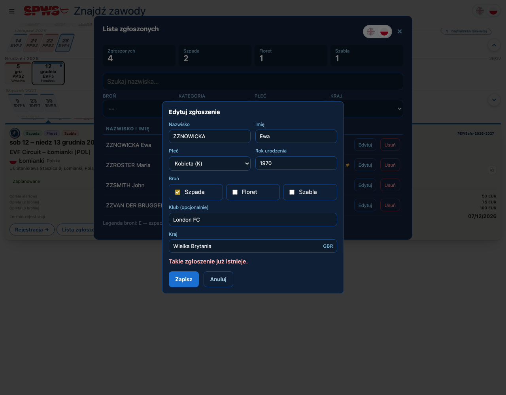
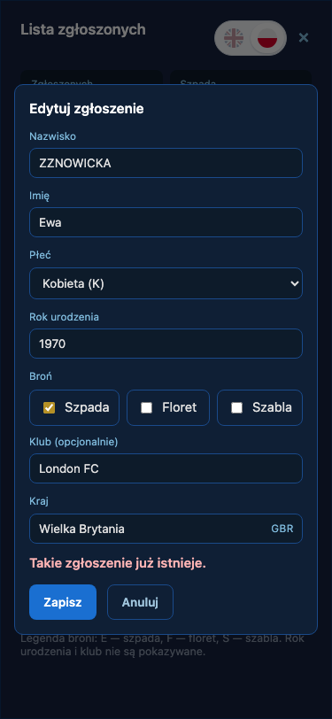
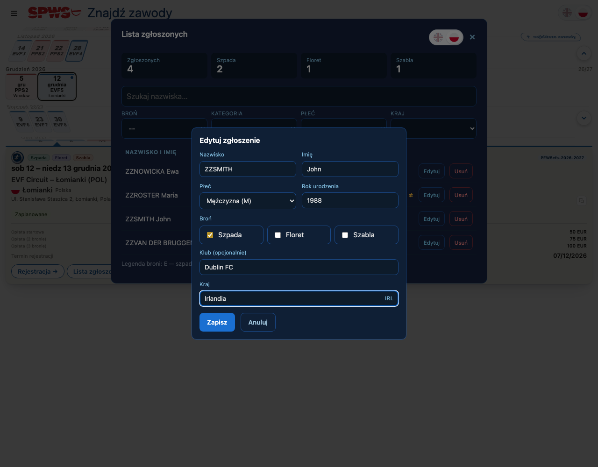
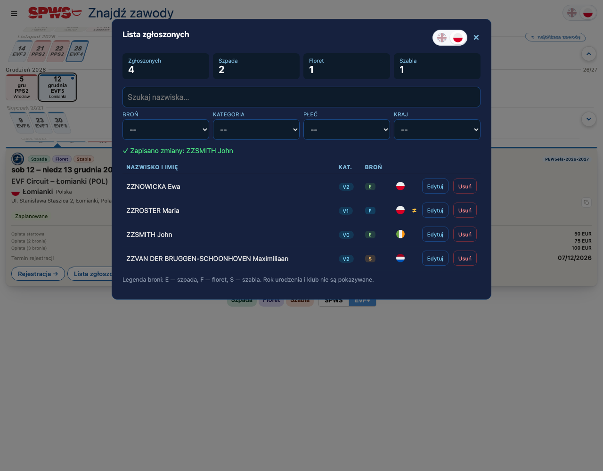
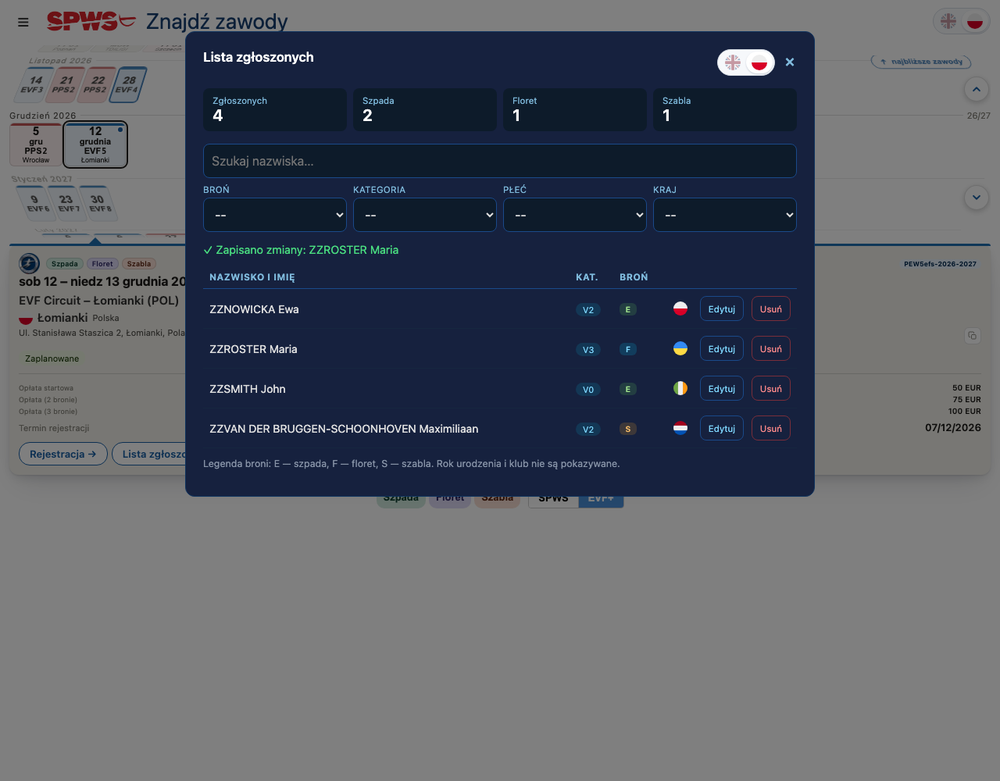

Registration form · Administrator's edit · Release 4 of 4 · Pixel sheet, amended 22 Nov
A signed-in administrator edits an entry, and a linked entry's correction reaches the roster
Captured on the WordPress page bodies (doc/wordpress/ranking.html signed in on /ranking/?admin=1, and znajdz-zawody.html as a visitor), with bundles built from main and from this branch and LOCAL standing in for PROD. You approved this sheet on 22 Nov: I25 A, and R1–R3 A for your addition. Both are now built test-first and captured again. A visitor's list changes in one place only: a phone name too long for its row now ends in „…”. The signed-in list gains „Edytuj”, the ≠ mark, and on a phone its own line for the actions. A save on a linked entry now writes the fencer's year, gender and country to the roster in the same transaction. Nothing is pushed.
01 · Nothing else changed
Before against after
- Noise floor first. Two runs of main's build were identical: the visitor's list 4 of 4, the signed-in list 4 of 4.
- A visitor's list (four throwaway entries on Łomianki), at desktop 1280 and phone 375, in PL and EN: 2 of 4 identical. The two phone captures differ only in a 14 × 12 px box: the end of ZZVAN DER BRUGGEN-SCHOONHOVEN, which main cuts mid-letter and the branch ends with „…” (I25). No „Edytuj” and no ≠ appear, and a visitor's list reads no entry details (RFADM.01).
- The signed-in list: 0 of 4 identical, as expected, because every difference lies in the action column, plus on a phone the line that column now takes. Main shows 4 „Usuń”. The branch shows 4 „Edytuj” beside 4 „Usuń”, and ≠ on ZZROSTER Maria only.
- Measured on the phone, every row: each name cell is one where the browser draws „…”; the one name too long is cut with „…”; the category, weapon and flag stay on the name's line; and a signed-in row's actions sit on the line below (
rowsinafter-*/…-report.json). - No page errors in any run (0 across every report in
registration-admin-edit-release-4-sheet/*/).
The signed-in list, main against the branch




A visitor's list: the phone's long name ends in „…”, nothing else moves
02 · The dialog
Its states
1 · „Edytuj” on a newcomer: every declared field can be edited — ZZSMITH, 1990, London FC, Wielka Brytania


2 · a linked entry: the name is locked („Imię i nazwisko z bazy zawodników”), and the roster's year is shown beside the declared one: „w bazie: 1975 ≠”


3 · new: a changed year on a linked entry shows what the roster will get before „Zapisz”: „w bazie: 1975 → 1965”, then „Zmieni kategorię w bazie: V2 → V3; wyniki zawodnika zostaną przeliczone.”


4 · a refused save keeps the dialog open with the typed values and the reason. Renaming ZZSMITH into ZZNOWICKA Ewa 1970 gives „Takie zgłoszenie już istnieje.”




A year outside the season's range shows the form's own line („Rok spoza zakresu …”) and keeps „Zapisz” disabled. Any other failure says „Nie udało się zapisać zmian. Spróbuj ponownie.” (RFADM.06). Escape, „Anuluj” and the backdrop close the dialog without saving, and signing out closes an open dialog (RFADM.07–08). A year set back to the roster's own shows that year with no arrow and no ≠. A newcomer's changed year says nothing about the roster (RFADM.24).
03 · LOCAL walk-through
The administrator corrects two entries, one of them on the roster too
- Signed in on
/ranking/?admin=1, then „Znajdź zawody”, Łomianki, „Lista zgłoszonych”: 4 „Edytuj”, and ≠ on ZZROSTER Maria (declared 1979, roster 1975). - ZZSMITH John, a newcomer: year 1990 → 1988, club London FC → Dublin FC, country „irl” → Irlandia. After „Zapisz”: „✓ Zapisano zmiany: ZZSMITH John”, and the row shows the flag „Irlandia”. No roster row is written (R1).
- ZZROSTER Maria, linked: year 1979 → 1965 and country Polska → Ukraina. Before the save the dialog reads „w bazie: 1975 → 1965” and „Zmieni kategorię w bazie: V2 → V3; wyniki zawodnika zostaną przeliczone.”. After the save: „✓ Zapisano zmiany: ZZROSTER Maria”, and the list has no ≠ left, because the entry and the roster now agree.
- The database afterwards. The roster fencer ZZROSTER holds 1965, not marked as estimated. Her 2026/27 nationality row holds UKR with source ADMIN, and
tbl_fencer.txt_nationalityis untouched (R3). The audit log holds one row for her change. The entry is still linked and keeps its edit token. ZZSMITH holds 1988, IRL, Dublin FC, unlinked. Every throwaway entry and the throwaway fencer, with her nationality row, were then removed: LOCAL holds 0 entries.







04 · I25 A, built
A name too long for a phone row ends in „…”
The cause. On a phone each cell of a row was an inline flex box, and a browser draws no „…” inside a flex box, so a name that did not fit was cut mid-letter. The name cell is now a block, the one display that gets the „…”. A visitor's only visible change is the end of a long name.
Signed in, on a phone, the row wraps: ≠, „Edytuj” and „Usuń” sit on their own line under the name. The name starts from no width and takes whatever room the category, weapon and flag leave. The first capture of A had let a long name push those three onto a line of their own; a test now pins that they stay beside the name, and the second capture shows them there. Desktop is unchanged.
05 · Your addition, R1–R3 A, built
A linked entry's correction also reaches the fencers table
What PROD holds today (read 22 Nov, counts only)
- 127 entries are linked to a roster fencer. Against the roster, the declared birth year differs on 6 (none of those six roster years is marked estimated), the country on 4, the gender on 0 and the club on 69.
- Nothing reads the roster's club. The 13 Sep migration says the entry's club is „not the same column as tbl_fencer.txt_club, and never synchronised with it”. Most of the 69 are an empty roster club against a typed one.
- A birth year on the roster moves results.
trg_fencer_change_enqueueputs every event the fencer has a result in on the recompute queue, and the PROD drain re-brackets them within 15 minutes (ADR-072). - CERT follows PROD. The CERT refresh copies PROD's fencer values before a CERT ingest, so a correction made from PROD's list reaches CERT with no second write.
What was built
- One database function,
fn_update_registration_as_admin(migration20261122000003, SECURITY DEFINER, executable by signed-in users only). It updates the entry, then, for a linked entry only (R1), copies to the roster what this save changed: the birth year, marked as confirmed, throughfn_update_fencer_birth_year; the gender, throughfn_update_fencer_gender; and the country, as the event season's ADMIN row intbl_fencer_nationality(R2, R3). The club stays the entry's own, and a field the save left as it was is never copied. It is one transaction: a refused write anywhere refuses the whole save. - The dialog saves through it (
updateRegistrationAsAdmincalls the function instead of updating the table), and shows the roster's old and new year, plus a category change, before „Zapisz”. - Each roster change is logged by the existing
trg_audit_fencer, with old and new values.
Tests, red first:
- pgTAP RFADM.16–22 (
135_registration_admin_edit_roster.sql, 12 assertions) failed on the missing function before the migration. They cover the year reaching the roster confirmed and queueing every event of the fencer; an unchanged year not copied; the club kept; a newcomer writing no roster row and staying unlinked; the gender; the season's ADMIN nationality, withtxt_nationalityuntouched; a refused save moving neither the entry nor the roster; and a visitor refused. - Vitest RFADM.23 (the save calls the function) and RFADM.24 (the dialog's two lines, in PL and EN) failed first.
- RFADM.25 (I25's phone rules and the signed-in row's own action line) failed first, then failed again for the pushed chips before their fix.
06 · For your sign-off
ADR-079 amendment, as built
ADR-079 · Amendment (2026-11-21, release 4) — a signed-in administrator edits an entry, and a linked entry's correction reaches the roster
Context. On 21 Nov 2026 two entries' impossible birth years (47 and −1972) were corrected on PROD by hand, through the database. FR-166 had given the administrator „Usuń” but nothing to correct an entry. Six of PROD's 127 linked entries declare a year other than the roster's, and nothing showed it. On 22 Nov the user asked that a correction of a linked entry also reach the fencers table.
Decision.
- On the entry list reached from the admin calendar (the route of FR-166), each row carries „Edytuj” beside „Usuń”. A visitor sees neither, and a visitor's list reads no entry details.
- The dialog edits every declared field: surname, given name, gender, birth year, weapons, club and country (D2 A). A linked entry's name is locked, because the database keeps the roster's name for it.
- For a linked entry the dialog shows the roster's birth year beside the declared one, and the signed-in list marks an entry where they differ with ≠ (D5 A).
- For a linked entry only, what the save changed reaches the roster in the same transaction: the birth year, marked as confirmed; the gender; and the country, as the event season's ADMIN nationality, never
tbl_fencer.txt_nationality(R1–R3 A). The club stays the entry's own. Before „Zapisz” the dialog shows the roster's new year and any category change. A birth-year change queues the fencer's events for recompute (ADR-072), and the audit trigger logs the roster change. - One SECURITY DEFINER function,
fn_update_registration_as_admin, writes both, for signed-in users only. The table's own rules hold: the name form, the roster's name, the season's year range and the country code. - A refused save keeps the dialog open with the reason: the year's range line, „Takie zgłoszenie już istnieje.” for a rename into another newcomer's identity, or a general failure otherwise. An edit never links or unlinks, and never touches the consent record or the fencer's edit link.
- On a phone, a name too long for its row ends in „…”, and a signed-in row puts its actions on a line of their own (I25 A).
Consequences. An entry, and with it the fencer's roster record, is corrected from the list in one dialog, without a visit to the database. New: migration 20261122000003 with fn_update_registration_as_admin; EntryEdit.svelte; and fetchAdminEntryDetails, updateRegistrationAsAdmin and fetchEventSeasonEndYear in api.ts. Tests: Vitest RFADM.01–08, 13–15 and 23–25 (EntryEdit.test.ts, EntryList.test.ts, api.registration.test.ts); pgTAP RFADM.09–12 (133_registration_admin_edit.sql) and 16–22 (135_registration_admin_edit_roster.sql). FR-170. Relates to ADR-072 (recompute on a birth-year change) and ADR-033 (the roster's gender is authoritative; an administrator's correction is not an import).
07 · Found on the way
Issues
- I25: built as A (section 04).
- The first build of I25 A let a long name push its chips onto a second line on a signed-in phone. It was caught in the capture, pinned by a test, and fixed before this sheet.
- The capture tool first looked for the dialog by
role="dialog", which the calendar's own modal also has. It now finds the edit dialog by its class, and it measures each phone row (cut, „…”, chips, actions). - Two older test files (
CalendarView.test.ts,RegistrationModal.test.ts) mock the API by name. A signed-in list now also reads the entry details and the season, so both mocks list the two new calls with empty answers. No assertion changed. - postgrestools cannot see the helper functions that test 134 creates in its own transaction, so that file marks the region with a reasoned
pgt-ignore, as test 02 does. The file checks with zero findings. - Test 133's header said „no new function”. It now says the dialog saves through the function of test 134, and that 133 pins the table rules the function relies on.
pixel sheet · FR-170 release 4 · 21 Nov 2026, amended 22 Nov · tools: registration-admin-edit-release-4-sheet/tools/proof.cjs (visitor · admin · dialog · walk), seed-admin.sql, diff.py, build_sheet.py